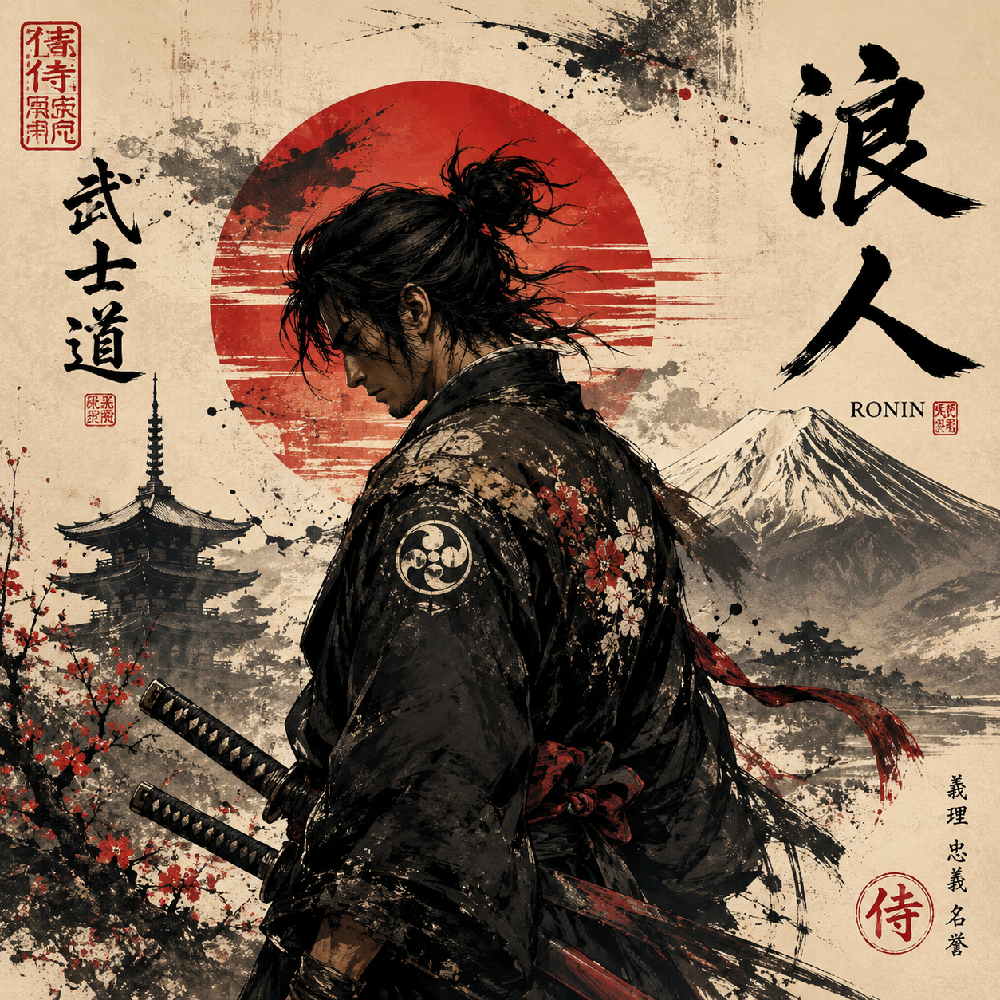

Canvas Relic
Ronin at Dawn
A lone warrior framed against a rising sun. For those who greet the day with quiet resolve and unspoken vows.
Wall Ritual · Resolve
覚悟 — Kakugo — is the quiet moment before the blade is drawn, the robe is tied, the first sip of coffee is taken. This is a space for those who treat their mornings, their battles, and their art as ceremony.

Not products. Artifacts. Each piece is designed as a tool for ritual — to be worn, held, or hung with intention.
A lone warrior framed against a rising sun. For those who greet the day with quiet resolve and unspoken vows.
Minimal kanji, maximum intention. A daily reminder that every choice is a cut in the fabric of your story.
For warriors who greet the dawn with intention. A vessel for coffee, tea, or quiet reflection before the day’s battles.
A curated series honoring the core tenets of Bushidō — each piece dedicated to a different virtue of the warrior’s path.
Every artifact belongs to a ritual. Every ritual belongs to a warrior. Choose the rhythm that matches your path.
The quiet hour before the world wakes. A mug, a canvas, a single intention set for the day. Resolve is not loud — it’s chosen.
The moment you step into your work, your craft, your conflict. Apparel becomes armor, art becomes a standard you fight beneath.
When the blade is sheathed and the day is weighed. A wall relic, a warm drink, a glance at the ronin who reminds you why you chose this path.